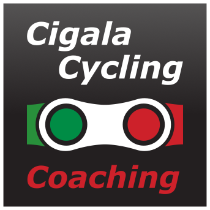

Cigala Cycling CoachingAREA ATLETAPiano gara
Étape du Tour 2027
Atleta: Luca Ferri · 168 km · 4.100 m di dislivello
ESEMPIO · atleta inventato
Arrivo previsto
7 h 42
obiettivo 7:30–7:55
Ritmo in salita
235 W
88% della CP
Carboidrati
90 g/h
≈ 690 g in totale
Liquidi
750 ml/h
+ 1 g di sodio / litro
Percorso e ritmo
Salita per salita
| Salita | Lunghezza | Obiettivo | Tempo |
|---|---|---|---|
| Salita 1 | 11,6 km · 7,1% | 220–230 W | 52 min |
| Salita 2 | 14,2 km · 6,8% | 230–240 W | 63 min |
| Salita finale | 13,8 km · 8,0% | 235 W, poi dai tutto | 71 min |
Piano di alimentazione
- Colazione 3 h prima: 150 g di carboidrati
- Ogni 20 min: un gel o ½ barretta (30 g)
- Borraccia 1: 60 g di mix, borraccia 2: acqua e sali
- Prima di ogni salita: un gel in più
Cigala Cycling Coaching
Train smarter. Ride faster.
 Matteo Cigala · Head Coach
Matteo Cigala · Head CoachReport di esempio · atleta inventatocoaching.cigalacycling.com